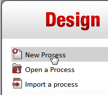
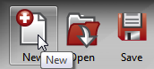
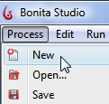

Create a new diagram
(Category: Process Modeling)
Create a new diagram when you want to begin designing a new process from
scratch. Create a new diagram by clicking on New in one of 3
places :
- From the Bonita Studio Welcome page. In the
Design menu, click on New Process .

- From the Cool bar In Bonita Studio. Cliick on
the New icon.

- From the Menu bar. Click on Process, then on
the New icon.
